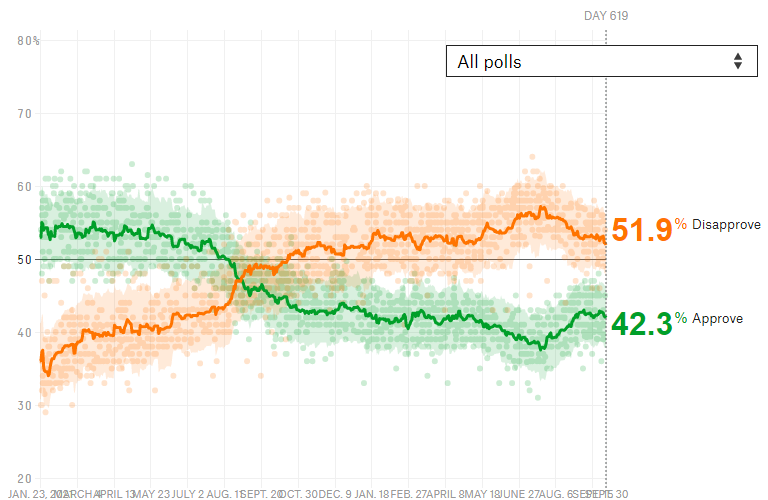
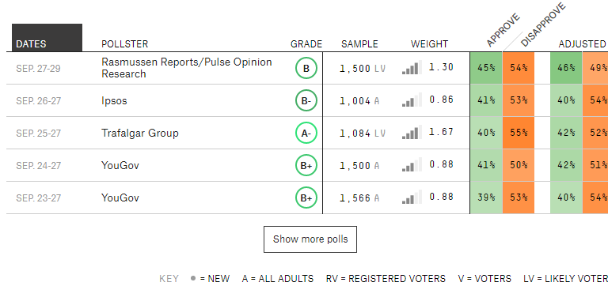
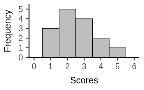
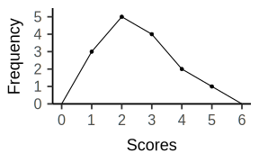
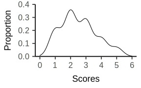
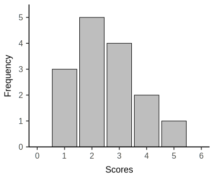
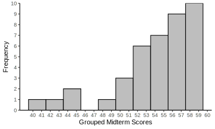
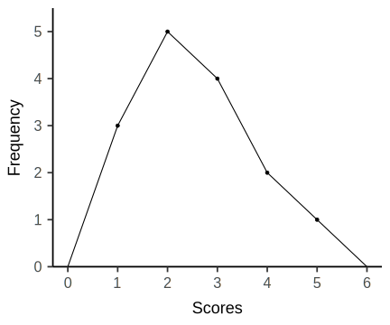
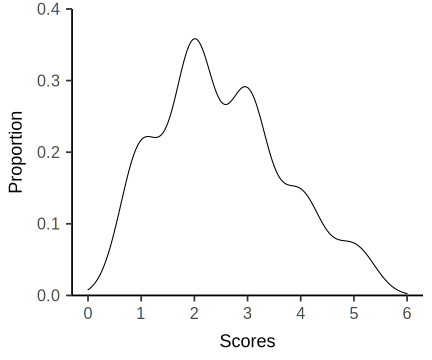

A bunch of numbers looking for an argument. 1
 
2 1 2 3 4 3 3 2 2 1 5 3 4 1 2| \(X\) | \(f\) |
|---|---|
| 1 | 3 |
| 2 | 5 |
| 3 | 4 |
| 4 | 2 |
| 5 | 1 |


| \(X\) | \(f\) | Proportion | Percent | Cumulative Percent |
|---|---|---|---|---|
| 1 | 3 | 0.20 | 20.00 | 20.00 |
| 2 | 5 | 0.33 | 33.33 | 53.33 |
| 3 | 4 | 0.27 | 26.67 | 80.00 |
| 4 | 2 | 0.13 | 13.33 | 93.33 |
| 5 | 1 | 0.07 | 6.67 | 100.00 |
Midterm scores: 41 43 44 45 48 50 51 51 52 52 52 53 53 53 54 54 55 55 55 55 55 56 56 56 56 56 57 57 57 57 58 58 58 59 59 59 59 59 59 59| \(X\) | \(f\) |
|---|---|
| 41 | 1 |
| 42 | 0 |
| 43 | 1 |
| 44 | 1 |
| 45 | 1 |
| 46 | 0 |
| 47 | 0 |
| 48 | 1 |
| 49 | 0 |
| 50 | 1 |
| 51 | 2 |
| 52 | 3 |
| 53 | 3 |
| 54 | 2 |
| 55 | 5 |
| 56 | 5 |
| 57 | 4 |
| 58 | 3 |
| 59 | 7 |
| \(X\) | \(f\) |
|---|---|
| 40-41 | 1 |
| 42-43 | 1 |
| 44-45 | 2 |
| 46-47 | 0 |
| 48-49 | 1 |
| 50-51 | 3 |
| 52-53 | 6 |
| 54-55 | 7 |
| 56-57 | 9 |
| 58-59 | 10 |



| \(X\) | \(f\) |
|---|---|
| 40-41 | 1 |
| 42-43 | 1 |
| 44-45 | 2 |
| 46-47 | 0 |
| 48-49 | 1 |
| 50-51 | 3 |
| 52-53 | 6 |
| 54-55 | 7 |
| 56-57 | 9 |
| 58-59 | 10 |


| \(X\) | \(f\) |
|---|---|
| 5 | 2 |
| 4 | 4 |
| 3 | 1 |
| 2 | 0 |
| 1 | 3 |
coverAnim = {
const w = 1050
const h = 500
const x = d3.scaleLinear()
.domain([0, 6])
.range([0,w])
const y = d3.scaleLinear()
.domain([0, 0.36])
.range([h,0])
const line = d3.line()
.x(d => x(d.value))
.y(d => y(d.density))
const svg = d3.select("#cover-image")
.append("svg")
.attr("width", w)
.attr("height", h)
const path = svg.append("path")
.datum(data)
.attr("d", line)
.attr("fill", "none")
.attr("stroke", "black")
.attr("class", "invertable")
.attr("stroke-width", 2)
const length = path.node().getTotalLength()
path
.attr("stroke-dasharray", length + " " + length)
.attr("stroke-dashoffset", length)
path
.transition()
.duration(2000)
.attr("stroke-dashoffset", 0)
const sleep = (milliseconds) => {
return new Promise(resolve => setTimeout(resolve, milliseconds))
}
function anim() {
path
.transition().duration(2000).attr("stroke-dashoffset", -length)
.transition().duration(0).attr("stroke-dashoffset", length)
.transition()
.duration(3000)
.attr("stroke-dashoffset", 0)
.on("end", () => sleep(2000).then(anim))
};
svg.on("click", anim);
return svg.node();
}